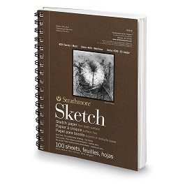
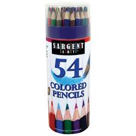

Hobbies and Interests
The first hobby I'm going to talk about are Drawing and Sketching. What I liked about drawing is that they can usually help me forget whatever bad stuff that was happening, or I would just draw for fun. As for sketching, I didn't officially start using this technique until I'm in 7th grade.
The first ever sketch I did in my life was back in 4th grade, when I have a butterfly project that required me to draw a butterfly. I attempted to sketch and it took way longer than I've expected. When I was done sketching, almost everyone else was done with the whole drawing. When I finished with coloring, I was so proud of my work. Even to this day, I can remember how beautiful it was, even comparable to a real photo of a butterfly. Unfortunitly, I lost the drawing and that is really heartbreaking.
The materials I've been using for sketching isn't exactly professional, of course. But for serious drawings, I would use my Strathmore Sketchbook along with average mechanical pencils. If it's for colored art, I would use my Sargent Art 54-pack colored pencils.